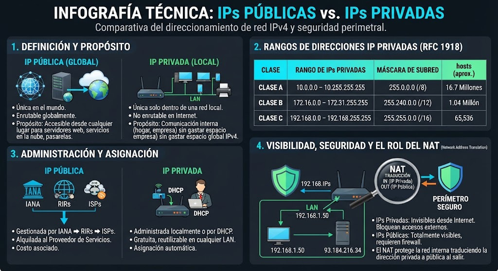
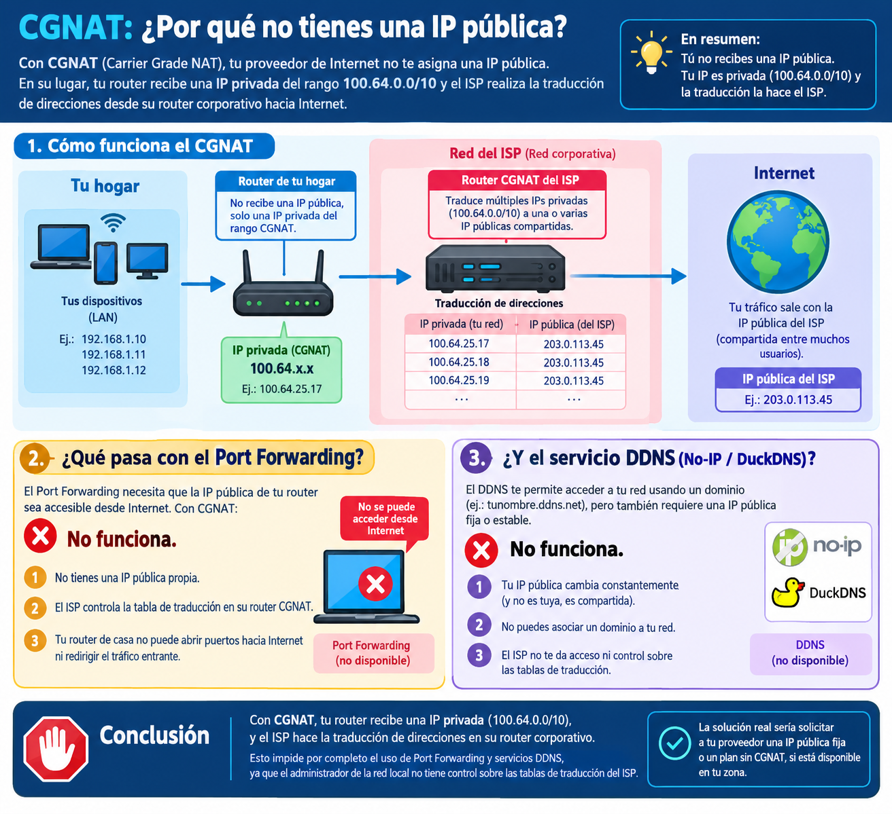

Una dirección IP (Internet Protocol) es una etiqueta
numérica lógica que identifica de forma única a una interfaz de red dentro de un dispositivo
(computadora, smartphone, servidor, cámara IP, router) para permitir el direccionamiento y
transporte de datos en redes basadas en la suite TCP/IP.
En la actualidad convivimos principalmente con el estándar IPv4, expresado en notación decimal punteada. Consta
de un formato de 32 bits binarios estructurados en cuatro octetos (bytes) separados por puntos
(ejemplo: 192.168.1.10). Cada octeto abarca un rango decimal de
0 a 255.
192Octeto 1 (8 bits)
168Octeto 2 (8 bits)
1Octeto 3 (8 bits)
10Octeto 4 (8 bits)
2
Direcciones IP Públicas vs. Privadas (RFC 1918)
Para preservar el espacio de direccionamiento IPv4 y organizar el tráfico global, las direcciones
se clasifican funcionalmente en dos ámbitos:
IP Pública
Es única y globalmente enrutable en la infraestructura pública de Internet.
La asigna el Proveedor de Servicios de Internet (ISP) a la interfaz WAN del router de
borde, permitiendo la comunicación externa.
IP Privada
Utilizada para la comunicación interna dentro de una LAN (hogar, empresa,
campus). No son enrutables en Internet y se reutilizan en millones de redes locales sin
causar conflictos.
Rangos Reservados para Redes Privadas (RFC 1918):
Clase A:10.0.0.0 a 10.255.255.255
(/8)
Clase B:172.16.0.0 a 172.31.255.255
(/12)
Clase C:192.168.0.0 a 192.168.255.255
(/16)
Esquema Tradicional: Red Local con NAT de Borde (1 a 1)
Host LAN (192.168.1.5)→Router Res. (NAT/PAT)→IP Pública WAN Exclusiva (200.44.10.5)→Internet
3
Tipos de IP Pública: Dinámica vs. Estática (Fija)
Las direcciones IP públicas asignadas por los proveedores de Internet varían según su
comportamiento y método de arrendamiento:
IP Pública Dinámica
Cambia de forma periódica o cada vez que el router de borde se reinicia. El ISP la
asigna automáticamente mediante servidores DHCP corporativos desde un pool de
direcciones disponibles. Es la norma en planes residenciales debido al óptimo
aprovechamiento de direcciones del proveedor.
IP Pública Estática (Fija)
Dirección invariable configurada de manera fija para un cliente. Se utiliza para
publicar servidores web/bases de datos, enlaces VPN sitio a sitio, o centrales de
telefonía VoIP. Suele requerir planes comerciales o costos adicionales de contratación.
El problema de la IP Dinámica y la solución
DDNS:
Con una IP pública dinámica, publicar un servicio local mediante redirección de puertos
(*Port Forwarding*) falla en cuanto la IP cambia. Históricamente, esto se resolvía con
DNS Dinámico (DDNS) mediante servicios como No-IP o
DuckDNS: un cliente de software instalado en la red monitorea los cambios de la IP
WAN y actualiza de inmediato un registro de dominio (ej. mi-servidor.ddns.net). Sin embargo, esta técnica requiere
obligatoriamente que el router posea una IP pública real y directa.

4
Carrier-Grade NAT (CGNAT)
Ante el agotamiento global de direcciones IPv4, los proveedores de Internet (especialmente
operadores de fibra óptica FTTH y redes móviles LTE/5G) han implementado CGNAT (Carrier-Grade NAT), definido en la norma RFC 6598.
En un escenario CGNAT, el proveedor inserta un nivel adicional de traducción de direcciones
entre el router residencial y la red pública de Internet. Esto significa que cientos de
hogares comparten una única IP pública externa.
Impacto del CGNAT en la Administración de Redes:
Bajo CGNAT, el router de tu hogar no recibe una IP pública, sino una IP
privada del espacio reservado para CGNAT (rango 100.64.0.0/10). En consecuencia, el apertura de
puertos (Port Forwarding) y los servicios DDNS (No-IP / DuckDNS) dejan de funcionar por
completo, ya que el administrador de la red local no tiene control sobre las
tablas de traducción del router corporativo del ISP.

¿Cómo verificar si una conexión utiliza
CGNAT?
Basta con ingresar a la interfaz de administración del router residencial y comparar la
dirección IP WAN asignada con la IP pública informada por sitios web de
diagnóstico (como cualesmiip.com). Si la IP WAN pertenece al rango 100.64.x.x - 100.127.x.x o no coincide con la IP pública
mostrada en el navegador, la conexión se encuentra bloqueada tras CGNAT.
Soluciones modernas para exponer servicios
sobre CGNAT:
Para superar el bloqueo del doble NAT sin adquirir una IP fija costosa, se recurre a
túneles de conexión saliente (Reverse Tunnels) y redes Mesh
VPN. Herramientas como Cloudflare Tunnels (cloudflared),
Tailscale, ZeroTier o Tunnelmole establecen un canal cifrado
saliente desde el host local hacia un servidor en la nube, evadiendo la necesidad de contar
con puertos mapeados en la red del proveedor.
La asignación manual (estática) de direcciones IP, máscaras de subred y puertas de enlace en
cada cliente es ineficiente y propensa a errores de duplicidad. El protocolo DHCP (RFC 2131) opera en la capa de aplicación (sobre
UDP/67 y UDP/68) automatizando la gestión centralizada del direccionamiento.
La negociación inicial de asignación se ejecuta mediante la secuencia de cuatro mensajes
conocida como proceso DORA:
D - Discover (Descubrimiento):
El cliente emite un paquete Broadcast (difusión en la subred local)
buscando un servidor DHCP activo en el segmento.
O - Offer (Oferta):
Uno o varios servidores DHCP responden con un mensaje Unicast u Offer
reservando una IP libre, máscara y tiempo de concesión (*Lease Time*).
R - Request (Petición):
El cliente notifica formalmente mediante Broadcast la aceptación de la
oferta propuesta por el servidor seleccionado.
A - Acknowledge (Confirmación):
El servidor DHCP responde con un ACK, formalizando el arrendamiento e
impartiendo parámetros adicionales (Gateway, DNS, WINS).
Flujo de Comunicación DHCP (Secuencia de Concesión)